7.3. Compressible Euler Equations¶
7.3.1. Introduction¶
The compressible Euler equations are equations for perfect fluid.
Perfect fluids have no heat conduction ( ) and no
viscosity (
) and no
viscosity ( ), so in the comoving frame the stress energy tensor
is:
), so in the comoving frame the stress energy tensor
is:

(we use 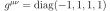). Relativistic Euler equations are given by the conservation of the stress energy tensor and the particle number conservation:
By doing the nonrelativistic limit (see Perfect Fluids for a detailed derivation), we get the following Euler equations:
where

is the total energy per unit volume, composed of the kinetic energy per unit
volume ( ) and the internal energy per unit volume (
) and the internal energy per unit volume ( ),
where
),
where  is the internal energy per unit mass (
is the internal energy per unit mass ( ). The energy
). The energy
 doesn’t contain the rest mass energy, but all other energies are hidden in
the internal energy.
doesn’t contain the rest mass energy, but all other energies are hidden in
the internal energy.
We use the ideal gas equations, so:
where
 is the number of moles of gas,
is the number of moles of gas,
 is the molar mass of the gas (i.e. a mass of one mole of the gas, e.g. for
dry air we get , as it is mainly composed of 20% of oxygen
with atomic mass 16 and 78% of nitrogen with atomic mass
is the molar mass of the gas (i.e. a mass of one mole of the gas, e.g. for
dry air we get , as it is mainly composed of 20% of oxygen
with atomic mass 16 and 78% of nitrogen with atomic mass  , both form
diatomic molecules, so the molecular mass is twice the atomic mass
giving the total of 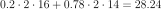, the rest is
given by the other components and one also has to average over all isotopes),
is the ideal gas constant
(
, both form
diatomic molecules, so the molecular mass is twice the atomic mass
giving the total of 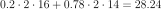, the rest is
given by the other components and one also has to average over all isotopes),
is the ideal gas constant
( is the Avogadro constant and is the Boltzmann constant),
is the Avogadro constant and is the Boltzmann constant),
 is the specific ideal gas constant (e.g. for dry air we get
is the specific ideal gas constant (e.g. for dry air we get
 ),
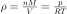 is the density of the gas (e.g. for dry air at
the pressure
),
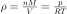 is the density of the gas (e.g. for dry air at
the pressure  and temperature we get
),
is the specific heat capacity at constant volume (i.e. the amount of
energy needed to heat one kg by one Kelvin at constant volume, e.g. for dry air
the experimental value is about ),
and temperature we get
),
is the specific heat capacity at constant volume (i.e. the amount of
energy needed to heat one kg by one Kelvin at constant volume, e.g. for dry air
the experimental value is about ),
 is the volume
and
is the volume
and  is the temperature of the gas.
Of those, , , ,
is the temperature of the gas.
Of those, , , ,  ,
,  are constants,
are constants,  , , and are
functions of
, , and are
functions of  .
.
Here are the SI units of the various terms in the Euler equations:
In order to calculate the specific heat ratio  , we use :
, we use :

and the speed of sound is:
7.3.2. Dimensionless Euler Equations¶
We choose 3 constants  ,
,  and - characteristic length of the
domain, velocity and density. Now we multiply the Euler equations with proper
combinations of these constants as follows:
and - characteristic length of the
domain, velocity and density. Now we multiply the Euler equations with proper
combinations of these constants as follows:
This is equal to:
where:
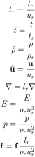
In particular, if , then
So the dimensionless Euler equations look exactly the same as the original ones, we just need to rescale all the quantities using the relations above.
7.3.3. Conservative Form of the Euler Equations¶
We can write the Euler equations as:
where:
![{\bf w} =
\left( \begin{array}{c}
\varrho\\ \rho u_1\\ \rho u_2\\ \rho u_3\\ E
\end{array} \right)
=
\left( \begin{array}{c}
w_0 \\
w_1 \\
w_2 \\
w_3 \\
w_4 \\
\end{array} \right)
{\bf f}_x =
\left( \begin{array}{c}
\rho u_1\\
\rho u_1^2 + p\\
\rho u_1 u_2\\
\rho u_1 u_3\\
u_1(E+p)
\end{array} \right)
=
\left( \begin{array}{c}
w_1\\
\frac{w_1^2}{w_0} + p\\
\frac{w_1w_2}{w_0}\\
\frac{w_1w_3}{w_0}\\
\frac{w_1}{w_0}(w_4+p)
\end{array} \right)
{\bf f}_y =
\left( \begin{array}{c}
\rho u_2\\
\rho u_2 u_1\\
\rho u_2^2 + p\\
\rho u_2 u_3\\
u_2(E+p)
\end{array} \right)
=
\left( \begin{array}{c}
w_2\\
\frac{w_2w_1}{w_0}\\
\frac{w_2^2}{w_0} + p\\
\frac{w_2w_3}{w_0}\\
\frac{w_2}{w_0}(w_4+p)
\end{array} \right)
{\bf f}_z =
\left( \begin{array}{c}
\rho u_3\\
\rho u_3 u_1\\
\rho u_3 u_2\\
\rho u_3^2 + p\\
u_3(E+p)
\end{array} \right)
=
\left( \begin{array}{c}
w_3\\
\frac{w_3w_1}{w_0}\\
\frac{w_3w_2}{w_0}\\
\frac{w_3^2}{w_0} + p\\
\frac{w_3}{w_0}(w_4+p)
\end{array} \right)
{\bf g} =
\left( \begin{array}{c}
0\\
-f_x\\
-f_y\\
-f_z\\
0\\
\end{array} \right)
p = {R\over c_v} \left(E-\half \rho\left(u_1^2 + u_2^2 + u_3^3\right)\right)
= {R\over c_v} \left(w_4-{w_1^2+w_2^2+w_3^2\over2w_0}\right)](../_images/math/eda39812a6e27d5b98f2d57e7e9bcec7838a184e.svg)
We solve for the unknowns  ,
,  ,
,  ,
,  and
and  as functions of
, the rest (, , ,
as functions of
, the rest (, , ,  ,
,  ) are either constants
or depend on the unknowns. In order to convert from the physical quantities
, 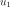,
) are either constants
or depend on the unknowns. In order to convert from the physical quantities
, 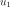,  ,
,  , and
, and  to , …, , we use:
to , …, , we use:
the opposite conversion is:
Sometimes people also use  , 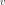 and instead of , and .
, 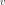 and instead of , and .
Note: , where  is the fluid density current
(it’s a 3-vector) and also (here is the same as
is the fluid density current
(it’s a 3-vector) and also (here is the same as
 , e.g. we are a bit sloppy about the notation), where
, e.g. we are a bit sloppy about the notation), where  is the
density 4-current (e.g. the first 4 components of are exactly the
components of the 4-current ):
is the
density 4-current (e.g. the first 4 components of are exactly the
components of the 4-current ):
where as usual is the relativistic index,  is the speed
of light, and in the nonrelativistic limit (
is the speed
of light, and in the nonrelativistic limit ( ) we get
) we get  and the remaining in
and the remaining in  will cancel with in
,
so it will not be present in the final equations (that involve terms like
will cancel with in
,
so it will not be present in the final equations (that involve terms like
 ). We can also just set
). We can also just set  as usual in relativistic
physics.
as usual in relativistic
physics.
7.3.4. Weak Formulation¶
The Euler equations:
are nonlinear. The time-derivative is approximated using the implicit Euler method
The vector-valued test functions for the above system of equations have the form:
After multiplying the equation system with the test functions and integrating
over the domain  , we obtain (here the index
, we obtain (here the index  is
numbering the 5 equations, so we are not summing over it):
is
numbering the 5 equations, so we are not summing over it):
Now we integrate by parts:
![\int_{\Omega} {w_i^{n+1}-w_i^n\over\tau}\varphi^i
- \left({\bf f}_x({\bf w}^{n+1})\right)_i
{\partial \varphi^i\over\partial x}
- \left({\bf f}_y({\bf w}^{n+1})\right)_i
{\partial \varphi^i\over\partial y}
- \left({\bf f}_z({\bf w}^{n+1})\right)_i
{\partial \varphi^i\over\partial z}
+ g_i \varphi^i
\ \d^3 x
+
+\int_{\partial\Omega}
\left({\bf f}_x({\bf w}^{n+1})\right)_i
\varphi^i\, n_x
+ \left({\bf f}_y({\bf w}^{n+1})\right)_i
\varphi^i\, n_y
+ \left({\bf f}_z({\bf w}^{n+1})\right)_i
\varphi^i\, n_z
\ \d^2 x
=0](../_images/math/d8c612048ef393c5106a55609b2afb27d988d51a.svg)
where  is the outward surface normal to
is the outward surface normal to
 . Rearranging:
. Rearranging:
![\int_{\Omega} {w_i^{n+1}\over\tau}\varphi^i
- \left({\bf f}_x({\bf w}^{n+1})\right)_i
{\partial \varphi^i\over\partial x}
- \left({\bf f}_y({\bf w}^{n+1})\right)_i
{\partial \varphi^i\over\partial y}
- \left({\bf f}_z({\bf w}^{n+1})\right)_i
{\partial \varphi^i\over\partial z}
\ \d^3 x
+
+\int_{\partial\Omega}
\left({\bf f}_x({\bf w}^{n+1})\right)_i
\varphi^i\, n_x
+ \left({\bf f}_y({\bf w}^{n+1})\right)_i
\varphi^i\, n_y
+ \left({\bf f}_z({\bf w}^{n+1})\right)_i
\varphi^i\, n_z
\ \d^2 x
=
\int_{\Omega} {w_i^n\over\tau}\varphi^i
- g_i\varphi^i
\ \d^3 x](../_images/math/f30ad28d8fb600bdd6d03ed02657e1a7390a55e9.svg)
We can then linearize this for example by taking the flux jacobians
on the previous time level
 .
.
The finite element formulation is obtained from here by replacing in the
standard way the unknown solution  by a piecewise-polynomial unknown
function
by a piecewise-polynomial unknown
function
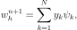
where 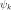 are the basis functions of the piecewise-polynomial finite element space. This turns the above weak formulation into a finite number of nonlinear algebraic equations of the form that will be solved using the Newton’s method.
Explicit Method¶
We also derive the weak formulation for the explicit method. Euler equations:
The time-derivative is approximated using the explicit Euler method
The vector-valued test functions for the above system of equations have the form:
After multiplying the equation system with the test functions and integrating
over the domain , we obtain (here the index is
numbering the 5 equations, so we are not summing over it):
Now we integrate by parts:
![\int_{\Omega} {w_i^{n+1}-w_i^n\over\tau}\varphi^i
- \left({\bf f}_x({\bf w}^{n})\right)_i
{\partial \varphi^i\over\partial x}
- \left({\bf f}_y({\bf w}^{n})\right)_i
{\partial \varphi^i\over\partial y}
- \left({\bf f}_z({\bf w}^{n})\right)_i
{\partial \varphi^i\over\partial z}
+ g_i \varphi^i
\ \d^3 x
+
+\int_{\partial\Omega}
\left({\bf f}_x({\bf w}^{n})\right)_i
\varphi^i\, n_x
+ \left({\bf f}_y({\bf w}^{n})\right)_i
\varphi^i\, n_y
+ \left({\bf f}_z({\bf w}^{n})\right)_i
\varphi^i\, n_z
\ \d^2 x
=0](../_images/math/c1b74e7b2309d20869272aacb545d819d6cc726f.svg)
where is the outward surface normal to
. Rearranging:
![\int_{\Omega} {w_i^{n+1}\over\tau}\varphi^i
\ \d^3 x
=
\int_{\Omega}{w_i^n\over\tau}\varphi^i
+ \left({\bf f}_x({\bf w}^{n})\right)_i
{\partial \varphi^i\over\partial x}
+ \left({\bf f}_y({\bf w}^{n})\right)_i
{\partial \varphi^i\over\partial y}
+ \left({\bf f}_z({\bf w}^{n})\right)_i
{\partial \varphi^i\over\partial z}
- g_i\varphi^i
\ \d^3 x
+
-\int_{\partial\Omega}
\left({\bf f}_x({\bf w}^{n})\right)_i
\varphi^i\, n_x
+ \left({\bf f}_y({\bf w}^{n})\right)_i
\varphi^i\, n_y
+ \left({\bf f}_z({\bf w}^{n})\right)_i
\varphi^i\, n_z
\ \d^2 x](../_images/math/c71edf5216f752166f69cd8b6a6ff1a425f0755a.svg)
7.3.5. Flux Jacobians¶
Now we write the spatial derivatives using the so called flux Jacobians
,
 and
and
 :
:
Similarly for  and 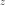, so we get:
and 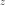, so we get:
One nice thing about these particular
,
 and
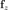 functions is that they are homogeneous of degree 1:
and
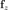 functions is that they are homogeneous of degree 1:
so the Euler equation/formula for the homogeneous function is:
So both the and it’s derivative can be nicely factored out using the flux Jacobian:
by differentiating the first equation and substracting the second, we get:
similarly for and .
To calculate the Jacobians, we’ll need:
then we can calculate the Jacobians (and we substitute for ):
![{\bf A}_x({\bf w}) = {\partial{\bf f}_x\over \partial {\bf w}}=
\left( \begin{array}{ccccc}
0 & 1 & 0 & 0 & 0\\
-{w_1^2\over w_0^2} +{R\over c_v}{w_1^2+w_2^2+w_3^2\over 2 w_0^2} &
{2w_1\over w_0}-{R\over c_v}{w_1\over w_0} &
-{R\over c_v}{w_2\over w_0} &
-{R\over c_v}{w_3\over w_0} &
{R\over c_v}\\
-{w_1w_2\over w_0^2} & {w_2\over w_0} & {w_1\over w_0} & 0 & 0\\
-{w_1w_3\over w_0^2} & {w_3\over w_0} & 0 & {w_1\over w_0} & 0 \\
-{w_1w_4\over w_0^2}-{w_1\over w_0^2}{R\over c_v}
\left(w_4-{w_1^2+w_2^2+w_3^2\over 2 w_0}\right)
+{w_1\over w_0}{R\over c_v}{w_1^2+w_2^2+w_3^2\over 2 w_0^2}&
{w_4\over w_0}+{1\over w_0}{R\over c_v}
\left(w_4-{w_1^2+w_2^2+w_3^2\over 2 w_0}\right)
-{R\over c_v}{w_1^2\over w_0^2} &
-{R\over c_v}{w_1w_2\over w_0^2} &
-{R\over c_v}{w_1w_3\over w_0^2} &
{w_1\over w_0}+{R\over c_v}{w_1\over w_0} \\
\end{array} \right)
{\bf A}_y({\bf w}) = {\partial{\bf f}_y\over \partial {\bf w}}=
\left( \begin{array}{ccccc}
0 & 0 & 1 & 0 & 0\\
-{w_2w_1\over w_0^2} & {w_2\over w_0} & {w_1\over w_0} & 0 & 0\\
-{w_2^2\over w_0^2} +{R\over c_v}{w_1^2+w_2^2+w_3^2\over 2 w_0^2} &
-{R\over c_v}{w_1\over w_0} &
{2w_2\over w_0}-{R\over c_v}{w_2\over w_0} &
-{R\over c_v}{w_3\over w_0} &
{R\over c_v}\\
-{w_2w_3\over w_0^2} & 0 & {w_3\over w_0} & {w_2\over w_0} & 0 \\
-{w_2w_4\over w_0^2}-{w_2\over w_0^2}{R\over c_v}
\left(w_4-{w_1^2+w_2^2+w_3^2\over 2 w_0}\right)
+{w_2\over w_0}{R\over c_v}{w_1^2+w_2^2+w_3^2\over 2 w_0^2}&
-{R\over c_v}{w_2w_1\over w_0^2} &
{w_4\over w_0}+{1\over w_0}{R\over c_v}
\left(w_4-{w_1^2+w_2^2+w_3^2\over 2 w_0}\right)
-{R\over c_v}{w_2^2\over w_0^2} &
-{R\over c_v}{w_2w_3\over w_0^2} &
{w_2\over w_0}+{R\over c_v}{w_2\over w_0} \\
\end{array} \right)
{\bf A}_z({\bf w}) = {\partial{\bf f}_z\over \partial {\bf w}}=
\left( \begin{array}{ccccc}
0 & 0 & 0 & 1 & 0\\
-{w_3w_1\over w_0^2} & {w_3\over w_0} & 0 & {w_1\over w_0} & 0 \\
-{w_3w_2\over w_0^2} & 0 & {w_3\over w_0} & {w_2\over w_0} & 0 \\
-{w_3^2\over w_0^2} +{R\over c_v}{w_1^2+w_2^2+w_3^2\over 2 w_0^2} &
-{R\over c_v}{w_1\over w_0} &
-{R\over c_v}{w_2\over w_0} &
{2w_3\over w_0} -{R\over c_v}{w_3\over w_0} &
{R\over c_v}\\
-{w_3w_4\over w_0^2}-{w_3\over w_0^2}{R\over c_v}
\left(w_4-{w_1^2+w_2^2+w_3^2\over 2 w_0}\right)
+{w_3\over w_0}{R\over c_v}{w_1^2+w_2^2+w_3^2\over 2 w_0^2}&
-{R\over c_v}{w_3w_1\over w_0^2} &
-{R\over c_v}{w_3w_2\over w_0^2} &
{w_4\over w_0}+{1\over w_0}{R\over c_v}
\left(w_4-{w_1^2+w_2^2+w_3^2\over 2 w_0}\right)
-{R\over c_v}{w_3^2\over w_0^2} &
{w_3\over w_0}+{R\over c_v}{w_3\over w_0} \\
\end{array} \right)](../_images/math/ac2b00849dbfa6c5b8337698b8684624ca8b7e40.svg)
7.3.6. 2D Version of the Equations¶

where:
![{\bf w} =
\left( \begin{array}{c}
\varrho\\ \rho u_1\\ \rho u_2\\ E
\end{array} \right)
=
\left( \begin{array}{c}
w_0 \\
w_1 \\
w_2 \\
w_3 \\
\end{array} \right)
{\bf f}_x =
\left( \begin{array}{c}
\rho u_1\\
\rho u_1^2 + p\\
\rho u_1 u_2\\
u_1(E+p)
\end{array} \right)
=
\left( \begin{array}{c}
w_1\\
\frac{w_1^2}{w_0} + p\\
\frac{w_1w_2}{w_0}\\
\frac{w_1}{w_0}(w_3+p)
\end{array} \right)
{\bf f}_y =
\left( \begin{array}{c}
\rho u_2\\
\rho u_2 u_1\\
\rho u_2^2 + p\\
u_2(E+p)
\end{array} \right)
=
\left( \begin{array}{c}
w_2\\
\frac{w_2w_1}{w_0}\\
\frac{w_2^2}{w_0} + p\\
\frac{w_2}{w_0}(w_3+p)
\end{array} \right)
{\bf g} =
\left( \begin{array}{c}
0\\
-f_x\\
-f_y\\
0\\
\end{array} \right)
p = {R\over c_v} \left(E-\half \rho\left(u_1^2 + u_2^2\right)\right)
= {R\over c_v} \left(w_3-{w_1^2+w_2^2\over2w_0}\right)](../_images/math/4137cd6f7aa8cf35a89de67cba86a3994ed207b9.svg)
Discretizing the time derivative:
The vector-valued test functions for the above system of equations have the form:
After multiplying the equation system with the test functions and integrating
over the domain , we obtain:
Now we integrate by parts:

where is the outward surface normal to
. Rearranging:

The 2D flux Jacobians are:
![{\bf A}_x({\bf w}) = {\partial{\bf f}_x\over \partial {\bf w}}=
\left( \begin{array}{cccc}
0 & 1 & 0 & 0\\
-{w_1^2\over w_0^2} +{R\over c_v}{w_1^2+w_2^2\over 2 w_0^2} &
{2w_1\over w_0}-{R\over c_v}{w_1\over w_0} &
-{R\over c_v}{w_2\over w_0} &
{R\over c_v}\\
-{w_1w_2\over w_0^2} & {w_2\over w_0} & {w_1\over w_0} & 0 \\
-{w_1w_3\over w_0^2}-{w_1\over w_0^2}{R\over c_v}
\left(w_3-{w_1^2+w_2^2\over 2 w_0}\right)
+{w_1\over w_0}{R\over c_v}{w_1^2+w_2^2\over 2 w_0^2} &
{w_3\over w_0}+{1\over w_0}{R\over c_v}
\left(w_3-{w_1^2+w_2^2\over 2 w_0}\right)
-{R\over c_v}{w_1^2\over w_0^2} &
-{R\over c_v}{w_1w_2\over w_0^2} &
{w_1\over w_0}+{R\over c_v}{w_1\over w_0} \\
\end{array} \right)
{\bf A}_y({\bf w}) = {\partial{\bf f}_y\over \partial {\bf w}}=
\left( \begin{array}{cccc}
0 & 0 & 1 & 0\\
-{w_2w_1\over w_0^2} & {w_2\over w_0} & {w_1\over w_0} & 0 \\
-{w_2^2\over w_0^2} +{R\over c_v}{w_1^2+w_2^2\over 2 w_0^2} &
-{R\over c_v}{w_1\over w_0} &
{2w_2\over w_0} -{R\over c_v}{w_2\over w_0} &
{R\over c_v}\\
-{w_2w_3\over w_0^2}-{w_2\over w_0^2}{R\over c_v}
\left(w_3-{w_1^2+w_2^2\over 2 w_0}\right)
+{w_2\over w_0}{R\over c_v}{w_1^2+w_2^2\over 2 w_0^2}&
-{R\over c_v}{w_2w_1\over w_0^2} &
{w_3\over w_0}+{1\over w_0}{R\over c_v}
\left(w_3-{w_1^2+w_2^2\over 2 w_0}\right)
-{R\over c_v}{w_2^2\over w_0^2} &
{w_2\over w_0}+{R\over c_v}{w_2\over w_0} \\
\end{array} \right)](../_images/math/76fdf64c4fec3aab289cabf47c3a9c02199edd2f.svg)
7.3.7. Sea Breeze Modeling¶
In our 2D model we make the following assumptions:
and the boundary condition is as follows:

The weak formulation in 2D is (here  ):
):
In order to specify the input forms for Hermes, we’ll write the weak formulation as:
where the forms are (we write  instead of
instead of  ):
):
![l_0(\varphi^0) = \int_\Omega {w_0^n\varphi^0\over\tau} \,\d^2 x
l_1(\varphi^1) = \int_\Omega {w_1^n\varphi^1\over\tau} \,\d^2 x
l_2(\varphi^2) = \int_\Omega {w_2^n\varphi^2\over\tau} + \rho g \varphi^2
\,\d^2 x
l_3(\varphi^3) = \int_\Omega {w_3^n\varphi^3\over\tau} \,\d^2 x
B_{ij}(w_j, \varphi^i) = \int_{\Omega} {w_i\over\tau}\varphi^i
\delta_{ij}
- \left({\bf A}_x({\bf w}^n)\right)_{ij}
w_j {\partial \varphi^i\over\partial x}
- \left({\bf A}_z({\bf w}^n)\right)_{ij}
w_j {\partial \varphi^i\over\partial z}
\ \d^2 x](../_images/math/1099b59ab0ba7296896004c8187ccf4438794de6.svg)
In the last expression we do not sum over  nor
nor  .
In particular:
.
In particular:
![B_{00}(w_0, \varphi^0) = \int_{\Omega} {w_0\over\tau}\varphi^0
- \left({\bf A}_x({\bf w}^n)\right)_{00}
w_0 {\partial \varphi^0\over\partial x}
- \left({\bf A}_z({\bf w}^n)\right)_{00}
w_0 {\partial \varphi^0\over\partial z}
\ \d^2 x
=
\int_{\Omega} {w_0\over\tau}\varphi^0
\ \d^2 x
B_{01}(w_1, \varphi^0) = \int_{\Omega}
- \left({\bf A}_x({\bf w}^n)\right)_{01}
w_1 {\partial \varphi^0\over\partial x}
- \left({\bf A}_z({\bf w}^n)\right)_{01}
w_1 {\partial \varphi^0\over\partial z}
\ \d^2 x
=
\int_{\Omega}
- \left({\bf A}_x({\bf w}^n)\right)_{01}
w_1 {\partial \varphi^0\over\partial x}
\ \d^2 x
B_{02}(w_2, \varphi^0) = \int_{\Omega}
- \left({\bf A}_x({\bf w}^n)\right)_{02}
w_2 {\partial \varphi^0\over\partial x}
- \left({\bf A}_z({\bf w}^n)\right)_{02}
w_2 {\partial \varphi^0\over\partial z}
\ \d^2 x
=
\int_{\Omega}
- \left({\bf A}_z({\bf w}^n)\right)_{02}
w_2 {\partial \varphi^0\over\partial z}
\ \d^2 x
B_{03}(w_3, \varphi^0) = \int_{\Omega}
- \left({\bf A}_x({\bf w}^n)\right)_{03}
w_3 {\partial \varphi^0\over\partial x}
- \left({\bf A}_z({\bf w}^n)\right)_{03}
w_3 {\partial \varphi^0\over\partial z}
\ \d^2 x
=0
B_{10}(w_0, \varphi^1) = \int_{\Omega}
- \left({\bf A}_x({\bf w}^n)\right)_{10}
w_0 {\partial \varphi^1\over\partial x}
- \left({\bf A}_z({\bf w}^n)\right)_{10}
w_0 {\partial \varphi^1\over\partial z}
\ \d^2 x
B_{11}(w_1, \varphi^1) = \int_{\Omega} {w_1\over\tau}\varphi^1
- \left({\bf A}_x({\bf w}^n)\right)_{11}
w_1 {\partial \varphi^1\over\partial x}
- \left({\bf A}_z({\bf w}^n)\right)_{11}
w_1 {\partial \varphi^1\over\partial z}
\ \d^2 x
\cdots](../_images/math/c4b98149a6b7f02854562970dfbf7fea073c854e.svg)
7.3.8. Boundary Conditions¶
We rewrite the boundary integral by rotating coordinates, so that
the flow is only in the  direction (thus we only have ):
direction (thus we only have ):
Now we need to approximate somehow. We do that by solving the following 1D problem (Riemann problem):

or:
(7.3.8.1)¶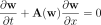
And we approximate . The initial condition is:
Now we write:
and substitute into (7.3.8.1):
so we get:
This is a nonlinear problem, that cannot be solved exactly. First,
let  doesn’t depend on . Then also
doesn’t depend on . Then also  are constants:
are constants:

and the solution is constant along the characteristic for and we get:
and
so:
In the nonlinear case we cannot solve it exactly, but we can approximate the solution by:
(7.3.8.2)¶
Let’s say the domain is for and we are applying the BC condition from
 . Then is taken from the solution and
. Then is taken from the solution and  is
prescribed, for example at the bottom it could be:
is
prescribed, for example at the bottom it could be:
Now we need to calculate  . First we write:
. First we write:
![{\bf A}_x = {\bf R}{\bf D}_x{\bf R}^{-1}
{\bf A}_x^- = {\bf R}{\bf D}_x^-{\bf R}^{-1}
{\bf D}_x({\bf w}) = {w_1\over w_0}\one +
\diag(-c, 0, 0, 0, c)
=
\left( \begin{array}{ccccc}
u_1-c & 0 & 0 & 0 & 0 \\
0 & u_1 & 0 & 0 & 0 \\
0 & 0 & u_1 & 0 & 0 \\
0 & 0 & 0 & u_1 & 0 \\
0 & 0 & 0 & 0 & u_1 + c \\
\end{array} \right)
{\bf D}_x({\bf w})^- =\begin{cases}
\diag({w_1\over w_0}-c, {w_1\over w_0}, {w_1\over w_0}, {w_1\over w_0}, 0)
& w_1 < 0\cr
\diag({w_1\over w_0}-c, 0, 0, 0, 0) & w_1 > 0\cr
\end{cases}](../_images/math/3798714bbff76e48b4035c431a5e4e2da5c5b7e6.svg)
Explicit forms of the matrices:
![{\bf R} = \left(\begin{smallmatrix}1 & 1 & 1 & 1 & 1\\u - c & u & u & u & c + u\\v & v & v - c & v & v\\w & w & w & w - c & w\\- c u - \frac{c^{2}}{1 - \kappa} + \frac{1}{2} u^{2} + \frac{1}{2} v^{2} + \frac{1}{2} w^{2} & \frac{1}{2} u^{2} + \frac{1}{2} v^{2} + \frac{1}{2} w^{2} & - c v + \frac{1}{2} u^{2} + \frac{1}{2} v^{2} + \frac{1}{2} w^{2} & - c w + \frac{1}{2} u^{2} + \frac{1}{2} v^{2} + \frac{1}{2} w^{2} & c u - \frac{c^{2}}{1 - \kappa} + \frac{1}{2} u^{2} + \frac{1}{2} v^{2} + \frac{1}{2} w^{2}\end{smallmatrix}\right)
{\bf R}^{-1} = {1\over c^2} \left(\begin{smallmatrix}\frac{1}{2} c u - \frac{1}{4} u^{2} - \frac{1}{4} v^{2} - \frac{1}{4} w^{2} + \frac{1}{4} \kappa u^{2} + \frac{1}{4} \kappa v^{2} + \frac{1}{4} \kappa w^{2} & \frac{1}{2} u - \frac{1}{2} c - \frac{1}{2} \kappa u & \frac{1}{2} v - \frac{1}{2} \kappa v & \frac{1}{2} w - \frac{1}{2} \kappa w & - \frac{1}{2} + \frac{1}{2} \kappa\\- c v - c w + c^{2} + \frac{1}{2} u^{2} + \frac{1}{2} v^{2} + \frac{1}{2} w^{2} - \frac{1}{2} \kappa u^{2} - \frac{1}{2} \kappa v^{2} - \frac{1}{2} \kappa w^{2} & - u + \kappa u & c - v + \kappa v & c - w + \kappa w & 1 - \kappa\\c v & 0 & - c & 0 & 0\\c w & 0 & 0 & - c & 0\\- \frac{1}{2} c u - \frac{1}{4} u^{2} - \frac{1}{4} v^{2} - \frac{1}{4} w^{2} + \frac{1}{4} \kappa u^{2} + \frac{1}{4} \kappa v^{2} + \frac{1}{4} \kappa w^{2} & \frac{1}{2} c + \frac{1}{2} u - \frac{1}{2} \kappa u & \frac{1}{2} v - \frac{1}{2} \kappa v & \frac{1}{2} w - \frac{1}{2} \kappa w & - \frac{1}{2} + \frac{1}{2} \kappa\end{smallmatrix}\right)
{\bf D}_x = \left(\begin{smallmatrix}u - c & 0 & 0 & 0 & 0\\0 & u & 0 & 0 & 0\\0 & 0 & u & 0 & 0\\0 & 0 & 0 & u & 0\\0 & 0 & 0 & 0 & c + u\end{smallmatrix}\right)
{\bf A}_x = \left(\begin{smallmatrix}0 & 1 & 0 & 0 & 0\\- \frac{3}{2} u^{2} - \frac{1}{2} v^{2} - \frac{1}{2} w^{2} + \frac{1}{2} \kappa u^{2} + \frac{1}{2} \kappa v^{2} + \frac{1}{2} \kappa w^{2} & 3 u - \kappa u & v - \kappa v & w - \kappa w & -1 + \kappa\\- u v & v & u & 0 & 0\\- u w & w & 0 & u & 0\\\frac{- 2 u v^{2} - 2 u w^{2} + 2 u c^{2} - u \kappa^{2} v^{2} - u \kappa^{2} w^{2} + 3 \kappa u v^{2} + 3 \kappa u w^{2} - 2 u^{3} - \kappa^{2} u^{3} + 3 \kappa u^{3}}{2 - 2 \kappa} & \frac{v^{2} + w^{2} - 2 c^{2} + 3 u^{2} - \kappa v^{2} - \kappa w^{2} - 5 \kappa u^{2} + 2 \kappa^{2} u^{2}}{2 - 2 \kappa} & u v - \kappa u v & u w - \kappa u w & \kappa u\end{smallmatrix}\right)](../_images/math/cbc7389128878febaacc9a6f6f65137d5844bfae.svg)
For :
![{\bf D}_x^- = \left(\begin{smallmatrix}u - c & 0 & 0 & 0 & 0\\0 & u & 0 & 0 & 0\\0 & 0 & u & 0 & 0\\0 & 0 & 0 & u & 0\\0 & 0 & 0 & 0 & 0\end{smallmatrix}\right)
{\bf A}_x^- = \left(\begin{smallmatrix}\frac{2 c v^{2} + 2 c w^{2} + 2 u v^{2} + 2 u w^{2} + 4 u c^{2} + 6 c u^{2} - 2 c \kappa u^{2} - 2 c \kappa v^{2} - 2 c \kappa w^{2} - 2 \kappa u v^{2} - 2 \kappa u w^{2} + 2 u^{3} - 2 \kappa u^{3}}{8 c^{2}} & \frac{- 2 c u + c \kappa u + c^{2} - u^{2} + \kappa u^{2}}{2 c^{2}} & \frac{- c v - u v + c \kappa v + \kappa u v}{2 c^{2}} & \frac{- c w - u w + c \kappa w + \kappa u w}{2 c^{2}} & \frac{c + u - c \kappa - \kappa u}{2 c^{2}}\\\frac{- 2 c^{2} u^{2} - 2 c^{2} v^{2} - 2 c^{2} w^{2} + 2 u^{2} v^{2} + 2 u^{2} w^{2} - 2 \kappa u^{2} v^{2} - 2 \kappa u^{2} w^{2} + 2 \kappa c^{2} u^{2} + 2 \kappa c^{2} v^{2} + 2 \kappa c^{2} w^{2} + 4 c u v^{2} + 4 c u w^{2} - 4 c \kappa u v^{2} - 4 c \kappa u w^{2} + 4 u c^{3} + 8 c u^{3} - 4 c \kappa u^{3} + 2 u^{4} - 2 \kappa u^{4}}{8 c^{2}} & \frac{- 3 c u^{2} + 3 u c^{2} - \kappa u c^{2} + 2 c \kappa u^{2} - c^{3} - u^{3} + \kappa u^{3}}{2 c^{2}} & \frac{- 2 c u v + 2 c \kappa u v + v c^{2} - v u^{2} + \kappa v u^{2} - \kappa v c^{2}}{2 c^{2}} & \frac{- 2 c u w + 2 c \kappa u w + w c^{2} - w u^{2} + \kappa w u^{2} - \kappa w c^{2}}{2 c^{2}} & \frac{2 c u - 2 c \kappa u + u^{2} - c^{2} + \kappa c^{2} - \kappa u^{2}}{2 c^{2}}\\\frac{- 4 u v c^{2} + 2 c v w^{2} + 2 u v w^{2} + 6 c v u^{2} - 2 c \kappa v u^{2} - 2 c \kappa v w^{2} - 2 \kappa u v w^{2} + 2 c v^{3} + 2 u v^{3} + 2 v u^{3} - 2 c \kappa v^{3} - 2 \kappa u v^{3} - 2 \kappa v u^{3}}{8 c^{2}} & \frac{- 2 c u v + c \kappa u v + v c^{2} - v u^{2} + \kappa v u^{2}}{2 c^{2}} & \frac{- c v^{2} - u v^{2} + 2 u c^{2} + c \kappa v^{2} + \kappa u v^{2}}{2 c^{2}} & \frac{- c v w - u v w + c \kappa v w + \kappa u v w}{2 c^{2}} & \frac{c v + u v - c \kappa v - \kappa u v}{2 c^{2}}\\\frac{- 4 u w c^{2} + 2 c w v^{2} + 2 u w v^{2} + 6 c w u^{2} - 2 c \kappa w u^{2} - 2 c \kappa w v^{2} - 2 \kappa u w v^{2} + 2 c w^{3} + 2 u w^{3} + 2 w u^{3} - 2 c \kappa w^{3} - 2 \kappa u w^{3} - 2 \kappa w u^{3}}{8 c^{2}} & \frac{- 2 c u w + c \kappa u w + w c^{2} - w u^{2} + \kappa w u^{2}}{2 c^{2}} & \frac{- c v w - u v w + c \kappa v w + \kappa u v w}{2 c^{2}} & \frac{- c w^{2} - u w^{2} + 2 u c^{2} + c \kappa w^{2} + \kappa u w^{2}}{2 c^{2}} & \frac{c w + u w - c \kappa w - \kappa u w}{2 c^{2}}\\\frac{- 2 c^{3} u^{2} - 2 c^{3} v^{2} - 2 c^{3} w^{2} + 2 u^{3} v^{2} + 2 u^{3} w^{2} - 6 u c^{2} v^{2} - 6 u c^{2} w^{2} - 4 \kappa u^{3} v^{2} - 4 \kappa u^{3} w^{2} - 2 \kappa c^{3} u^{2} + 2 c v^{2} w^{2} + 2 \kappa c^{3} v^{2} + 2 \kappa c^{3} w^{2} + 2 u v^{2} w^{2} + 2 \kappa^{2} u^{3} v^{2} + 2 \kappa^{2} u^{3} w^{2} + 6 c u^{2} v^{2} + 6 c u^{2} w^{2} - 10 c \kappa u^{2} v^{2} - 10 c \kappa u^{2} w^{2} - 4 c \kappa v^{2} w^{2} - 4 \kappa u v^{2} w^{2} - 2 u c^{2} \kappa^{2} v^{2} - 2 u c^{2} \kappa^{2} w^{2} + 2 c \kappa^{2} v^{2} w^{2} + 2 u \kappa^{2} v^{2} w^{2} + 4 c \kappa^{2} u^{2} v^{2} + 4 c \kappa^{2} u^{2} w^{2} + 8 \kappa u c^{2} v^{2} + 8 \kappa u c^{2} w^{2} - 2 c^{2} u^{3} - 2 c^{2} \kappa^{2} u^{3} + 4 \kappa c^{2} u^{3} + c v^{4} + c w^{4} + u v^{4} + u w^{4} + 4 u c^{4} + 5 c u^{4} + c \kappa^{2} v^{4} + c \kappa^{2} w^{4} + u \kappa^{2} v^{4} + u \kappa^{2} w^{4} - 8 c \kappa u^{4} - 2 c \kappa v^{4} - 2 c \kappa w^{4} - 2 \kappa u v^{4} - 2 \kappa u w^{4} + 3 c \kappa^{2} u^{4} + u^{5} + \kappa^{2} u^{5} - 2 \kappa u^{5}}{8 c^{2} - 8 \kappa c^{2}} & \frac{c^{2} v^{2} + c^{2} w^{2} - u^{2} v^{2} - u^{2} w^{2} + 3 c^{2} u^{2} - \kappa c^{2} v^{2} - \kappa c^{2} w^{2} - \kappa^{2} u^{2} v^{2} - \kappa^{2} u^{2} w^{2} - 5 \kappa c^{2} u^{2} - 2 c u v^{2} - 2 c u w^{2} + 2 \kappa u^{2} v^{2} + 2 \kappa u^{2} w^{2} + 2 c^{2} \kappa^{2} u^{2} - c u \kappa^{2} v^{2} - c u \kappa^{2} w^{2} + 3 c \kappa u v^{2} + 3 c \kappa u w^{2} - 4 c u^{3} + 2 u c^{3} - 3 c \kappa^{2} u^{3} + 7 c \kappa u^{3} - u^{4} - 2 c^{4} - \kappa^{2} u^{4} + 2 \kappa u^{4}}{4 c^{2} - 4 \kappa c^{2}} & \frac{- 6 c v u^{2} - 2 c v w^{2} - 2 u v w^{2} + 8 u v c^{2} - 4 \kappa u v c^{2} + 2 c \kappa v w^{2} + 2 \kappa u v w^{2} + 6 c \kappa v u^{2} - 2 c v^{3} - 2 u v^{3} - 2 v u^{3} + 4 v c^{3} + 2 c \kappa v^{3} + 2 \kappa u v^{3} + 2 \kappa v u^{3}}{8 c^{2}} & \frac{- 6 c w u^{2} - 2 c w v^{2} - 2 u w v^{2} + 8 u w c^{2} - 4 \kappa u w c^{2} + 2 c \kappa w v^{2} + 2 \kappa u w v^{2} + 6 c \kappa w u^{2} - 2 c w^{3} - 2 u w^{3} - 2 w u^{3} + 4 w c^{3} + 2 c \kappa w^{3} + 2 \kappa u w^{3} + 2 \kappa w u^{3}}{8 c^{2}} & \frac{2 c v^{2} + 2 c w^{2} + 2 u v^{2} + 2 u w^{2} + 6 c u^{2} - 6 c \kappa u^{2} - 2 c \kappa v^{2} - 2 c \kappa w^{2} - 2 \kappa u v^{2} - 2 \kappa u w^{2} + 4 \kappa u c^{2} - 4 c^{3} + 2 u^{3} - 2 \kappa u^{3}}{8 c^{2}}\end{smallmatrix}\right)](../_images/math/7545f9ce1d8267dac1e026ec16f06a2249202272.svg)
For  :
:
![{\bf D}_x^- = \left(\begin{smallmatrix}u - c & 0 & 0 & 0 & 0\\0 & 0 & 0 & 0 & 0\\0 & 0 & 0 & 0 & 0\\0 & 0 & 0 & 0 & 0\\0 & 0 & 0 & 0 & 0\end{smallmatrix}\right)
{\bf A}_x^- = \left(\begin{smallmatrix}\frac{- 4 u c^{2} - 2 u v^{2} - 2 u w^{2} + 2 c v^{2} + 2 c w^{2} + 6 c u^{2} - 2 c \kappa u^{2} - 2 c \kappa v^{2} - 2 c \kappa w^{2} + 2 \kappa u v^{2} + 2 \kappa u w^{2} - 2 u^{3} + 2 \kappa u^{3}}{8 c^{2}} & \frac{- 2 c u + c \kappa u + c^{2} + u^{2} - \kappa u^{2}}{2 c^{2}} & \frac{u v - c v + c \kappa v - \kappa u v}{2 c^{2}} & \frac{u w - c w + c \kappa w - \kappa u w}{2 c^{2}} & \frac{c - u + \kappa u - c \kappa}{2 c^{2}}\\\frac{- 10 c^{2} u^{2} - 2 c^{2} v^{2} - 2 c^{2} w^{2} - 2 u^{2} v^{2} - 2 u^{2} w^{2} + 2 \kappa c^{2} u^{2} + 2 \kappa c^{2} v^{2} + 2 \kappa c^{2} w^{2} + 2 \kappa u^{2} v^{2} + 2 \kappa u^{2} w^{2} + 4 c u v^{2} + 4 c u w^{2} - 4 c \kappa u v^{2} - 4 c \kappa u w^{2} + 4 u c^{3} + 8 c u^{3} - 4 c \kappa u^{3} - 2 u^{4} + 2 \kappa u^{4}}{8 c^{2}} & \frac{- 3 c u^{2} + 3 u c^{2} - \kappa u c^{2} + 2 c \kappa u^{2} + u^{3} - c^{3} - \kappa u^{3}}{2 c^{2}} & \frac{- 2 c u v + 2 c \kappa u v + v c^{2} + v u^{2} - \kappa v c^{2} - \kappa v u^{2}}{2 c^{2}} & \frac{- 2 c u w + 2 c \kappa u w + w c^{2} + w u^{2} - \kappa w c^{2} - \kappa w u^{2}}{2 c^{2}} & \frac{2 c u - 2 c \kappa u - c^{2} - u^{2} + \kappa c^{2} + \kappa u^{2}}{2 c^{2}}\\\frac{- 4 u v c^{2} - 2 u v w^{2} + 2 c v w^{2} + 6 c v u^{2} - 2 c \kappa v u^{2} - 2 c \kappa v w^{2} + 2 \kappa u v w^{2} - 2 u v^{3} - 2 v u^{3} + 2 c v^{3} - 2 c \kappa v^{3} + 2 \kappa u v^{3} + 2 \kappa v u^{3}}{8 c^{2}} & \frac{- 2 c u v + c \kappa u v + v c^{2} + v u^{2} - \kappa v u^{2}}{2 c^{2}} & \frac{u v^{2} - c v^{2} + c \kappa v^{2} - \kappa u v^{2}}{2 c^{2}} & \frac{u v w - c v w + c \kappa v w - \kappa u v w}{2 c^{2}} & \frac{c v - u v + \kappa u v - c \kappa v}{2 c^{2}}\\\frac{- 4 u w c^{2} - 2 u w v^{2} + 2 c w v^{2} + 6 c w u^{2} - 2 c \kappa w u^{2} - 2 c \kappa w v^{2} + 2 \kappa u w v^{2} - 2 u w^{3} - 2 w u^{3} + 2 c w^{3} - 2 c \kappa w^{3} + 2 \kappa u w^{3} + 2 \kappa w u^{3}}{8 c^{2}} & \frac{- 2 c u w + c \kappa u w + w c^{2} + w u^{2} - \kappa w u^{2}}{2 c^{2}} & \frac{u v w - c v w + c \kappa v w - \kappa u v w}{2 c^{2}} & \frac{u w^{2} - c w^{2} + c \kappa w^{2} - \kappa u w^{2}}{2 c^{2}} & \frac{c w - u w + \kappa u w - c \kappa w}{2 c^{2}}\\\frac{- 2 c^{3} u^{2} - 2 c^{3} v^{2} - 2 c^{3} w^{2} - 2 u^{3} v^{2} - 2 u^{3} w^{2} - 2 \kappa c^{3} u^{2} - 2 u c^{2} v^{2} - 2 u c^{2} w^{2} - 2 u v^{2} w^{2} - 2 \kappa^{2} u^{3} v^{2} - 2 \kappa^{2} u^{3} w^{2} + 2 c v^{2} w^{2} + 2 \kappa c^{3} v^{2} + 2 \kappa c^{3} w^{2} + 4 \kappa u^{3} v^{2} + 4 \kappa u^{3} w^{2} + 6 c u^{2} v^{2} + 6 c u^{2} w^{2} - 10 c \kappa u^{2} v^{2} - 10 c \kappa u^{2} w^{2} - 4 c \kappa v^{2} w^{2} - 2 u c^{2} \kappa^{2} v^{2} - 2 u c^{2} \kappa^{2} w^{2} - 2 u \kappa^{2} v^{2} w^{2} + 2 c \kappa^{2} v^{2} w^{2} + 4 c \kappa^{2} u^{2} v^{2} + 4 c \kappa^{2} u^{2} w^{2} + 4 \kappa u c^{2} v^{2} + 4 \kappa u c^{2} w^{2} + 4 \kappa u v^{2} w^{2} - 6 c^{2} u^{3} - 2 c^{2} \kappa^{2} u^{3} + 8 \kappa c^{2} u^{3} + c v^{4} + c w^{4} - u v^{4} - u w^{4} + 4 u c^{4} + 5 c u^{4} + c \kappa^{2} v^{4} + c \kappa^{2} w^{4} - u \kappa^{2} v^{4} - u \kappa^{2} w^{4} - 8 c \kappa u^{4} - 2 c \kappa v^{4} - 2 c \kappa w^{4} + 2 \kappa u v^{4} + 2 \kappa u w^{4} + 3 c \kappa^{2} u^{4} - u^{5} - \kappa^{2} u^{5} + 2 \kappa u^{5}}{8 c^{2} - 8 \kappa c^{2}} & \frac{c^{2} v^{2} + c^{2} w^{2} + u^{2} v^{2} + u^{2} w^{2} + 3 c^{2} u^{2} + \kappa^{2} u^{2} v^{2} + \kappa^{2} u^{2} w^{2} - \kappa c^{2} v^{2} - \kappa c^{2} w^{2} - 5 \kappa c^{2} u^{2} - 2 c u v^{2} - 2 c u w^{2} - 2 \kappa u^{2} v^{2} - 2 \kappa u^{2} w^{2} + 2 c^{2} \kappa^{2} u^{2} - c u \kappa^{2} v^{2} - c u \kappa^{2} w^{2} + 3 c \kappa u v^{2} + 3 c \kappa u w^{2} - 4 c u^{3} + 2 u c^{3} - 3 c \kappa^{2} u^{3} + 7 c \kappa u^{3} + u^{4} - 2 c^{4} + \kappa^{2} u^{4} - 2 \kappa u^{4}}{4 c^{2} - 4 \kappa c^{2}} & \frac{- 6 c v u^{2} - 2 c v w^{2} + 2 u v w^{2} - 4 \kappa u v c^{2} - 2 \kappa u v w^{2} + 2 c \kappa v w^{2} + 6 c \kappa v u^{2} - 2 c v^{3} + 2 u v^{3} + 2 v u^{3} + 4 v c^{3} - 2 \kappa u v^{3} - 2 \kappa v u^{3} + 2 c \kappa v^{3}}{8 c^{2}} & \frac{- 6 c w u^{2} - 2 c w v^{2} + 2 u w v^{2} - 4 \kappa u w c^{2} - 2 \kappa u w v^{2} + 2 c \kappa w v^{2} + 6 c \kappa w u^{2} - 2 c w^{3} + 2 u w^{3} + 2 w u^{3} + 4 w c^{3} - 2 \kappa u w^{3} - 2 \kappa w u^{3} + 2 c \kappa w^{3}}{8 c^{2}} & \frac{- 2 u v^{2} - 2 u w^{2} + 2 c v^{2} + 2 c w^{2} + 6 c u^{2} - 6 c \kappa u^{2} - 2 c \kappa v^{2} - 2 c \kappa w^{2} + 2 \kappa u v^{2} + 2 \kappa u w^{2} + 4 \kappa u c^{2} - 4 c^{3} - 2 u^{3} + 2 \kappa u^{3}}{8 c^{2}}\end{smallmatrix}\right)](../_images/math/761dd282dead76f902c0086acf02bea7ed3a131d.svg)
Boundary Conditions for the Sea Breeze Model¶
In the boundary (line) integral we prescribe using a Dirichlet condition and calculate it at each iteration using:
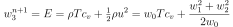
where  is a known function of time (it changes with the day and night)
and also prescribe on the left and right end of the domain and
is a known function of time (it changes with the day and night)
and also prescribe on the left and right end of the domain and
 at the top and bottom.
at the top and bottom.
All the surface integrals turn out to be zero. On the top and bottom edges we
have respectively and we prescribe  ,
so we get (remember we do not sum over ):
,
so we get (remember we do not sum over ):
where:
So all the components 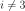 of the surface integral are zero, and for
the test function is not there, because we prescribe the Dirichlet
BC  , so the surface integral vanishes for all .
, so the surface integral vanishes for all .
Similarly on the left and right edges we
have respectively and we prescribe ,
so we get (remember we do not sum over ):
where:
So all the components  of the surface integral are zero, and for
the test function is not there, because we prescribe the Dirichlet
BC
of the surface integral are zero, and for
the test function is not there, because we prescribe the Dirichlet
BC  , so the surface integral vanishes for all .
, so the surface integral vanishes for all .
7.3.9. Newton Method¶
The residual is:
where numbers the equations, numbers the
finite element basis functions,  ,
.
The Jacobian is:
,
.
The Jacobian is:
And the Newton method then is:
7.3.10. Older notes¶
Author: Pavel Solin
Governing Equations and Boundary Conditions¶
(7.3.10.1)¶![\frac{\partial}{\partial t} \left( \begin{array}{c} \varrho\\ U\\ W\\
\theta \end{array} \right) + \frac{\partial}{\partial x} \left(
\begin{array}{c} U\\ \frac{U^2}{\varrho} + R\theta\\
\frac{UW}{\varrho}\\ \frac{\theta U}{\varrho} \end{array} \right) +
\frac{\partial}{\partial z} \left( \begin{array}{c} W\\
\frac{UW}{\varrho}\\ \frac{W^2}{\varrho} + R\theta\\ \frac{\theta
W}{\varrho} \end{array} \right) + \left( \begin{array}{c} 0\\ 0\\
\varrho g\\ \frac{R\theta}{c_v}\mbox{div}{\bf v} \end{array} \right) =
\left( \begin{array}{c} 0\\ 0\\ 0\\ 0 \end{array} \right),](../_images/math/7d8a82f1f2bdba61da05b131b46b83e83bcebc47.svg)
where 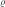 is the air density,  is the velocity,
is the velocity,  ,
,  , is the temperature,
, is the temperature,  , and
, and
 is the gravitational acceleration constant. We use the perfect gas state
equation
is the gravitational acceleration constant. We use the perfect gas state
equation  for the pressure.
for the pressure.
Boundary conditions are prescribed as follows:
edge
 : ,
: ,  , ,
, , edges
 : , , ,
: , , , edge
 : , , ,
: , , ,
Initial conditions have the form
Discretization and the Newton’s Method¶
We will use the implicit Euler method in time, i.e.,
etc. Let’s discuss one equation of (7.3.10.1) at a time:
Continuity equation: The weak formulation of
reads
(7.3.10.2)¶
The global coefficient vector  consists of four parts
consists of four parts  , ,
, ,  and corresponding to the fields , 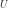,
and corresponding to the fields , 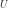,  and
and  , respectively.
The same holds for the vector function
, respectively.
The same holds for the vector function  which consists of four parts
which consists of four parts  ,
,  ,
and 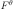. Thus the global Jacobi matrix will have a four-by-four block structure. We
denote
,
and 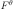. Thus the global Jacobi matrix will have a four-by-four block structure. We
denote
(7.3.10.3)¶
It follows from (7.3.10.2) and (7.3.10.3) that
First momentum equation: The second equation of (7.3.10.1) has the form
After applying the implicit Euler method, we obtain

Thus we obtain
![\frac{\partial F^{U}_i}{\partial y^{\varrho}_j} = - \int_{\Omega}\frac{2U}{\varrho^2}\frac{\partial U}{\partial x} \varphi^{\varrho}_j \varphi^{U}_i - \int_{\Omega} U^2 \left[(-2)\frac{1}{\varrho^3}\frac{\partial \varrho}{\partial x} \varphi^{\varrho}_j + \frac{1}{\varrho^2}\frac{\partial \varphi^{\varrho}_j}{\partial x}\right] \varphi^U_i](../_images/math/417441cca1140a1c55d83942db49a81d4d76a5f5.svg)
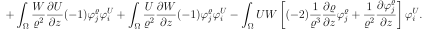
Analogously,
![\frac{\partial F^{U}_i}{\partial y^{U}_j} = \int_{\Omega}\frac{\varphi^U_j}{\tau}\varphi^U_i + \int_{\Omega}\frac{2}{\varrho} \left[ \frac{\partial U}{\partial x}\varphi^U_j + U \frac{\partial \varphi^U_j}{\partial x} \right] \varphi^U_i - \int_{\Omega} \frac{2U}{\varrho^2}\frac{\partial \varrho}{\partial x} \varphi^U_j \varphi^U_i](../_images/math/eb07158dbbda5c93420641ba4b95b17105aac744.svg)
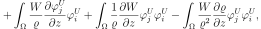
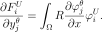
Second momentum equation: The third equation of (7.3.10.1) reads
After applying the implicit Euler method, we obtain
Thus we obtain
Analogously,

Internal energy equation: The last equation of (7.3.10.1) has the form
where . This can be written equivalently as
Written in terms of single derivatives, this is

i.e.,
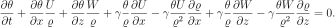
Weak formulation:
For the derivatives of the weak form we obtain: